Spatial Structure Simulation Analysis Tool · v1.0.0
시군구 단위 장래인구 추계 한 장으로 격자 인구 지도부터 생활권 경계까지 — 통합 대화상자 플러그인.
거주·근무 × 3시나리오 — 시군구 총량 보존
배분 결과 → 연도별 중심지 폴리곤·위계
4개 통합 프로세스 — 버튼 하나로 연쇄 실행
deck.gl HTML — 연도·회전·좌우 비교
sgg_cd_h, pop_YYYY)| 컬럼 | 타입 | 필수 | 설명 |
|---|---|---|---|
| gid | 문자 | 필수 | 격자 고유 ID — 중복 금지 |
| sgg_cd_h | 정수 | 필수 | 시군구 코드 — 추계 테이블과 같은 코드 체계 |
| pop_r | 숫자 | 필수 | 기준연도 거주인구 (거주인구 배분 기준) |
| pop_w | 숫자 | 근무 시 필수 | 기준연도 근무인구 (근무인구 배분 기준) |
| type | 문자 | 선택 | 거점 유형 — 정책관심구역 산출에 사용 |
| gid | sgg_cd_h | pop_r | pop_w | type |
| 다바4321 | 34010 | 1532.4 | 2210.0 | 중심지Ⅱ |
| 다바4322 | 34010 | 87.0 | 31.0 | 주변부 |
| 컬럼 | 타입 | 필수 | 설명 |
|---|---|---|---|
| sgg_cd_h | 정수 | 필수 | 시군구 코드 — 격자와 같은 코드 체계, 중복 금지 |
| pop_YYYY | 숫자 | 필수 | 연도별 목표 총인구(거주 또는 근무) — 1개 이상, 연도 자동 감지 |
| sgg_nm | 문자 | 선택 | 시군구 명칭 (참고용) |
| sgg_cd_h | sgg_nm | pop_2025 | pop_2030 | pop_2035 | pop_2040 |
| 34010 | 천안시 | 658000 | 672000 | 680000 | 683000 |
| 34020 | 공주시 | 103000 | 99000 | 95000 | 91000 |
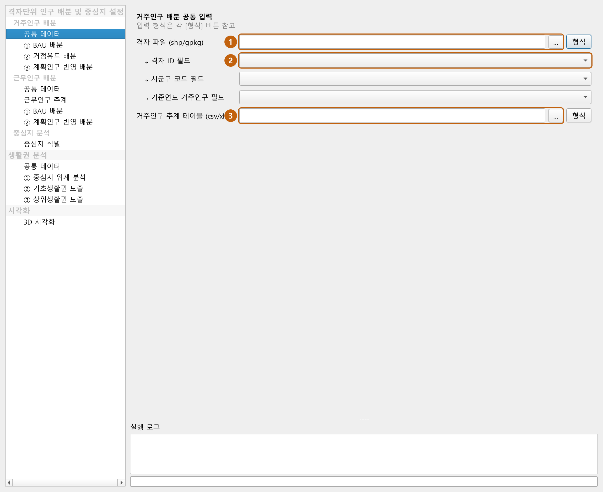
분석결과\거주인구배분\에 자동 저장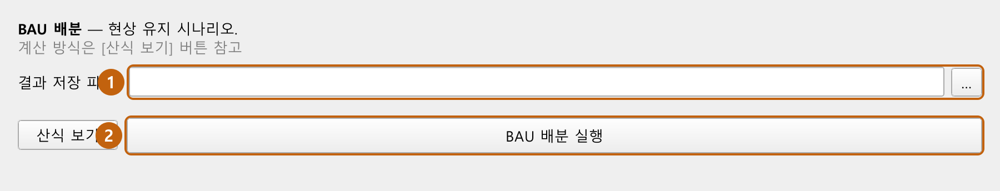
| 컬럼 | 타입 | 필수 | 설명 |
|---|---|---|---|
| gid | 문자 | 필수 | 거점 격자 ID — 격자 레이어의 gid와 매칭 |
| gid | type |
| 다바4321 | 중심지Ⅱ |
| 다바5100 | 중심지Ⅰ |
| 컬럼 | 타입 | 필수 | 설명 |
|---|---|---|---|
| GRID_1K_CD | 문자 | 필수 | 격자 ID — 격자 레이어의 gid와 매칭 |
| Me_CI_1 | 숫자 | 필수 | 마을시설 충족도 (0~10) |
| Me_CI_2 | 숫자 | 필수 | 거점시설 충족도 (0~10) |
| GRID_1K_CD | Me_CI_1 | Me_CI_2 |
| 다바4321 | 4.2 | 3.1 |
| 다바4322 | 1.0 | 0.5 |
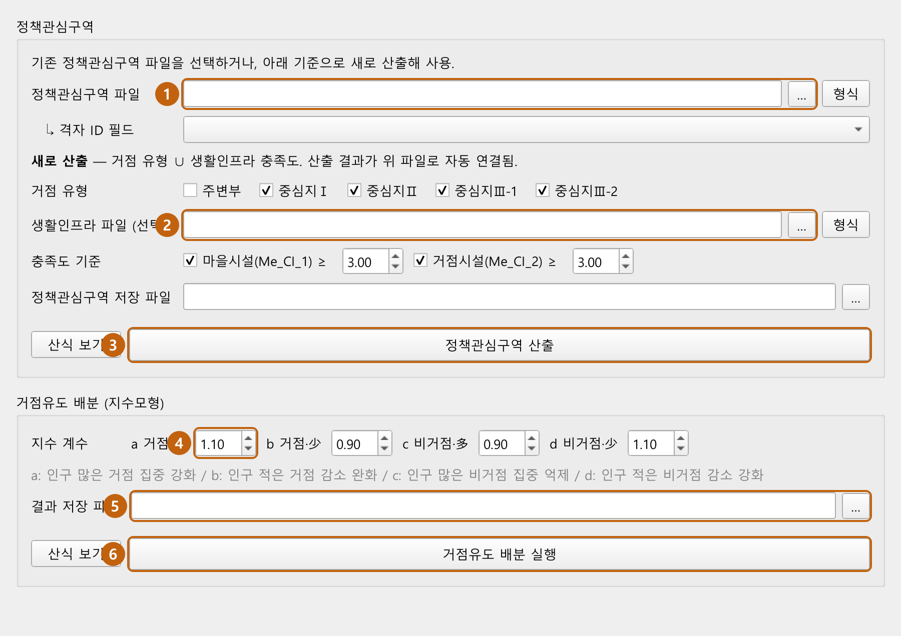
| 컬럼 | 타입 | 필수 | 설명 |
|---|---|---|---|
| plan_pop | 숫자 | 필수 | 계획인구(명) — 0·NULL 행은 제외 |
| yr_done | 정수 | 필수 | 준공연도 (예: 2028) |
| prj_pop | 숫자 | 선택 | 사업 전체 계획인구 합 — 복수 시군 분할 사업의 입주율 구간 판정용 |
| sgg_cd_h | 정수 | 선택 | 관할 시군구 코드 — 있으면 해당 시군 격자로만, 없으면 교차 시군 1/n |
| plan_pop | yr_done | prj_pop | sgg_cd_h |
| 12500 | 2027 | 12500 | 34010 |
| 48000 | 2030 | 96000 | 34020 |
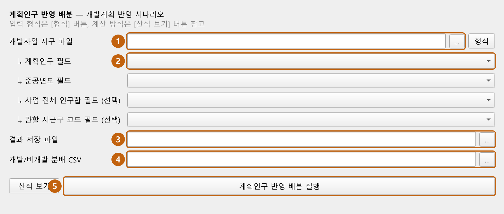
sgg_nm과 일치| 컬럼 | 타입 | 필수 | 설명 |
|---|---|---|---|
| 1열: 지역 | 문자 | 필수 | 시군구 이름 — 격자 sgg_nm과 일치해야 함 |
| 2열: 연도 | 정수 | 필수 | 관측 연도 — 지역당 2개 이상 |
| 3열: 고용률 | 숫자 | 필수 | 고용률(%) |
| 지역 | 연도 | 고용률(%) |
| 천안시 | 2017 | 62.3 |
| 천안시 | 2022 | 64.1 |
| 컬럼 | 타입 | 필수 | 설명 |
|---|---|---|---|
| 1열: 지역 | 문자 | 필수 | 시군구 이름 — 격자 sgg_nm과 일치 |
| 연도 컬럼 | 숫자 | 필수 | 연도별 15세 이상 인구 — 2개 이상. 이 연도들이 추계 구간·목표연도가 됨 |
| 지역 | 2022 | 2025 | 2030 | 2035 | 2040 |
| 천안시 | 590000 | 601000 | 615000 | 622000 | 624000 |
| 공주시 | 92000 | 90000 | 87000 | 84000 | 81000 |
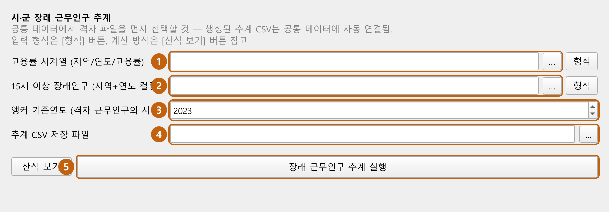
| 컬럼 | 타입 | 필수 | 설명 |
|---|---|---|---|
| gid | 문자 | 필수 | 격자 고유 ID — 거주·근무 결과 간 매칭 키 |
| pop_YYYY | 숫자 | 필수 | 연도별 배분 인구 — 거주·근무 공통 연도만 분석 |
| pop_r / pop_w | 숫자 | 선택 | 기준연도 인구 — 기준연도 분석에 사용 |
| gid | pop_r | pop_2025 | pop_2030 | pop_2035 | pop_2040 |
| 다바4321 | 1532.4 | 1601.2 | 1688.0 | 1702.3 | 1710.9 |
| 다바4322 | 87.0 | 85.1 | 82.6 | 80.0 | 77.7 |
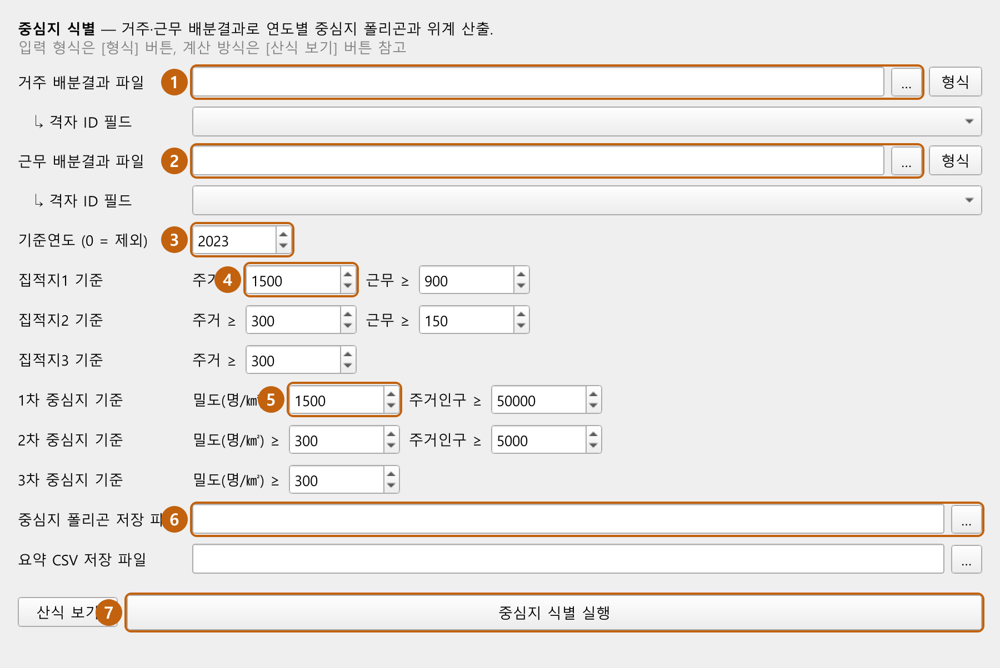
data\생활권분석\ — 폴더 번호 01~08이 슬롯 번호와 일치 (⑨는 ③ 실행으로 생성). 형식은 아래 표 참고.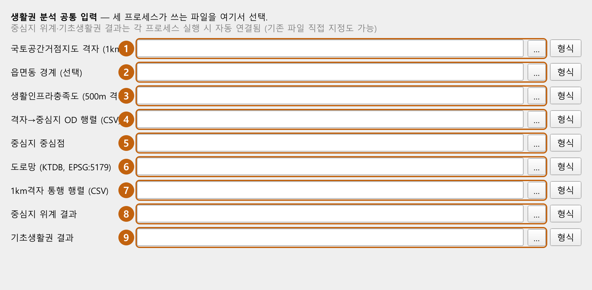
| 컬럼 | 타입 | 필수 | 설명 |
|---|---|---|---|
| gid | 문자 | 필수 | 격자 고유 ID — OD·중심점과 매칭 키 |
| type | 문자 | 필수 | 거점 유형 — 후보그룹1 판정 (값: '중심지Ⅰ'·'중심지Ⅱ') |
| pop_r | 숫자 | 필수 | 거주인구(밀도) — 후보그룹2 판정·속성 집계·대표점 가중치 |
| pop_w | 숫자 | 권장 | 근무인구 — 속성 집계(wpop_*) |
| pc_in / pc_out | 숫자 | 선택 | 유입·유출 중심성 — 속성 집계 |
| gid | type | pop_r | pop_w | pc_in | pc_out |
| 다바4321 | 중심지Ⅱ | 1532.4 | 2210.0 | 0.82 | 0.44 |
| 컬럼 | 타입 | 필수 | 설명 |
|---|---|---|---|
| emd_nm | 문자 | 필수 | 읍면동 명칭 — 후보 폴리곤 이름 부여·중복 제거 |
| emd_nm |
| 천안시 동남구 신부동 |
| 컬럼 | 타입 | 필수 | 설명 |
|---|---|---|---|
| *_ox 열들 | 숫자 | 필수 | 시설별 충족 여부(0/1) — 마을시설·거점시설 열을 ① 페이지에서 복수 선택 |
| GRID_CD | kinder_ox | phar_ox | hosp_ox | lib_ox |
| 다바43211 | 1 | 1 | 0 | 0 |
| 컬럼 | 타입 | 필수 | 설명 |
|---|---|---|---|
| origin_id | 문자 | 필수 | 출발 격자 ID — 격자 gid와 매칭 |
| destination_id | 문자 | 필수 | 도착 중심지 격자 ID — 중심점 gid와 매칭 |
| total_cost | 숫자 | 필수 | 이동 비용(거리·시간) — 최소값 중심지로 할당 |
| origin_id | destination_id | total_cost |
| 다바4321 | 다바5100 | 4820.5 |
| 컬럼 | 타입 | 필수 | 설명 |
|---|---|---|---|
| gid | 문자 | 필수 | 중심지 격자 ID — OD의 destination_id와 매칭 |
| cent_id | 문자/정수 | 필수 | 중심지(권역) ID — 기초생활권 구분 키 |
| cent_nm | 문자 | 필수 | 중심지 이름 — 지도 심볼 표기 |
| gid | cent_id | cent_nm |
| 다바5100 | C01 | 천안역세권 |
| 컬럼 | 타입 | 필수 | 설명 |
|---|---|---|---|
| ONEWAY | 문자 | 필수 | 일방통행 여부 — QNEAT3 경로 탐색에 사용 |
| LINK_ID | ONEWAY | MAX_SPD |
| 1000001 | FT | 80 |
| 컬럼 | 타입 | 필수 | 설명 |
|---|---|---|---|
| o_GRID_1K_CD | 문자 | 필수 | 출발 격자 ID |
| d_GRID_1K_CD | 문자 | 필수 | 도착 격자 ID |
| VOL2 | 숫자 | 필수 | 통행량 — 매력도의 유입·유출 통행 집계 |
| o_GRID_1K_CD | d_GRID_1K_CD | VOL2 |
| 다바4321 | 다바5100 | 152.3 |
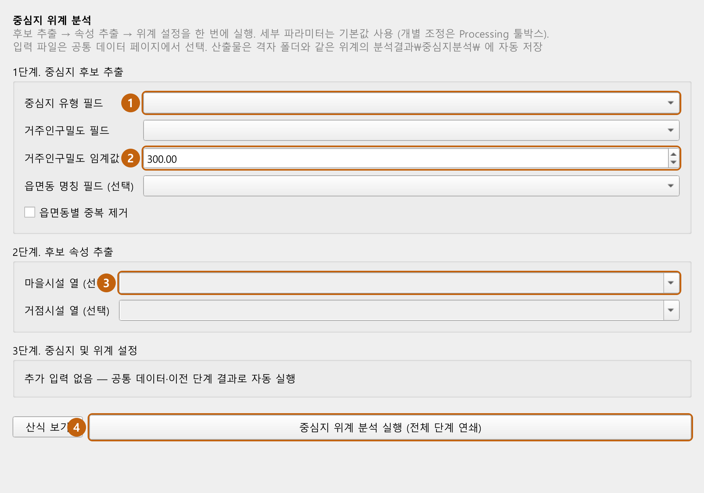
| 컬럼 | 타입 | 필수 | 설명 |
|---|---|---|---|
| cand_id | 문자/정수 | 필수 | 중심지 고유 ID |
| cent_cls | 문자 | 필수 | 위계 (생활중심지·지역중심지·광역중심지·이외) |
| rpop_sum·rpop_den 등 | 숫자 | 자동 | 속성 추출 단계가 만든 통계 필드 |
| cand_id | cent_cls | rpop_sum | rpop_den |
| 1 | 광역중심지 | 683200 | 1820.5 |
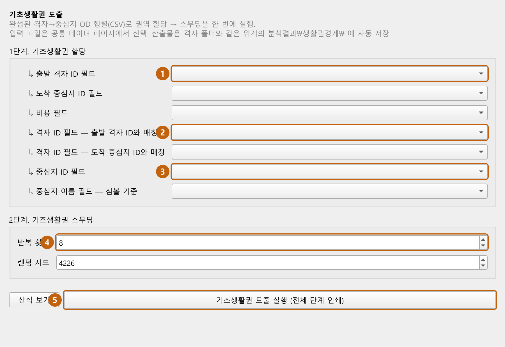
| 컬럼 | 타입 | 필수 | 설명 |
|---|---|---|---|
| gid | 문자 | 필수 | 격자 ID |
| cent_id | 문자/정수 | 필수 | 소속 생활권(중심지) ID |
| cent_nm | 문자 | 필수 | 소속 생활권 이름 |
| gid | cent_id | cent_nm |
| 다바4321 | C01 | 천안역세권 |
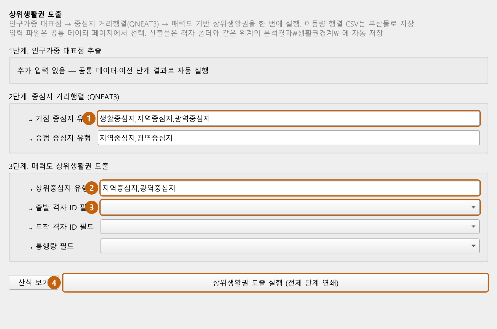
분석결과\인구배분_3D.html| 조작 | 방법 |
|---|---|
| 연도 전환 | 연도 점 클릭 — 바닥에서 올라오는 애니메이션 |
| 회전 | 휠 버튼 드래그(좌우 방향·상하 기울기) 또는 우클릭 드래그 |
| 비교 | 좌우 비교 모드 — 시점 동기화, 시나리오·연도 각각 (BAU 2025 vs 계획인구 2040) |
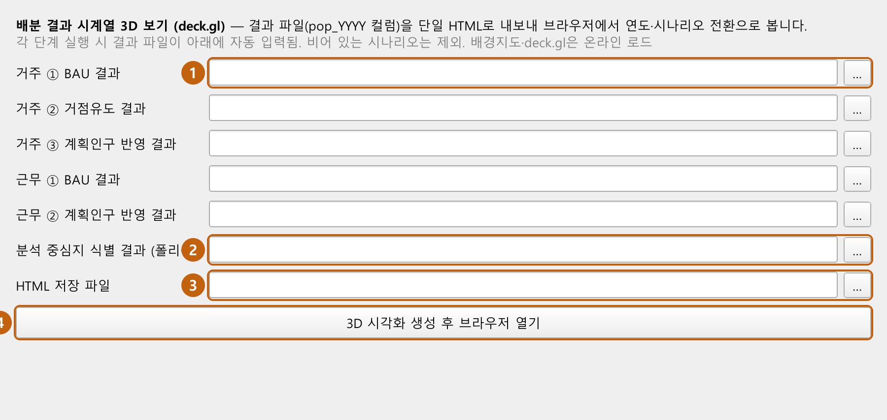
| 통계 | 설명 |
|---|---|
| 유효 N · NULL · 0 개수 | 값 있는 피처 수, 결측 수, 0인 피처 수 |
| 합계 · 평균 · 표준편차 | 전체 유효값 기준 |
| 0 제외 평균 | 0인 격자를 뺀 평균 — 인구 0 격자가 많은 데이터에서 실질 평균 확인 |
| 최소 · Q1 · 중앙값 · Q3 · 최대 | 사분위(선형보간) 분포 요약 |
| 왜도 · 첨도 | 분포 비대칭도·뾰족함 (첨도는 정규분포 = 0 기준) |
| 분포 그래프 | 표에서 필드 행 선택 후 버튼 — 히스토그램 + 같은 평균·표준편차의 정규분포 곡선 팝업, 0 제외 옵션 |